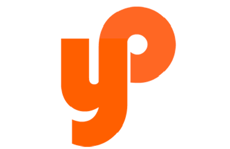

Green energies logo
Logo var skabet til et virksomhed, der producerer den økologiske energi ved vindmøller. Jeg valgt at lave logoet i naturlig farve –grøn. Blade på logoet ligger sådan, at man kan se form af vindmølle. På den måde associeres logo med økologisk energi. Og virksomheds navn står ved siden af logoet.